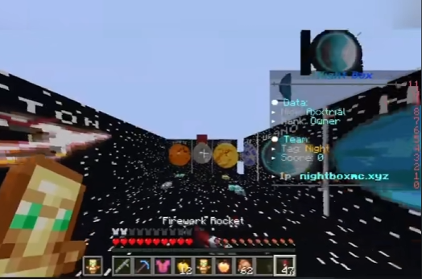
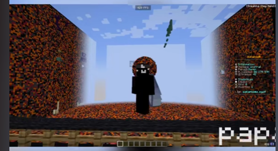
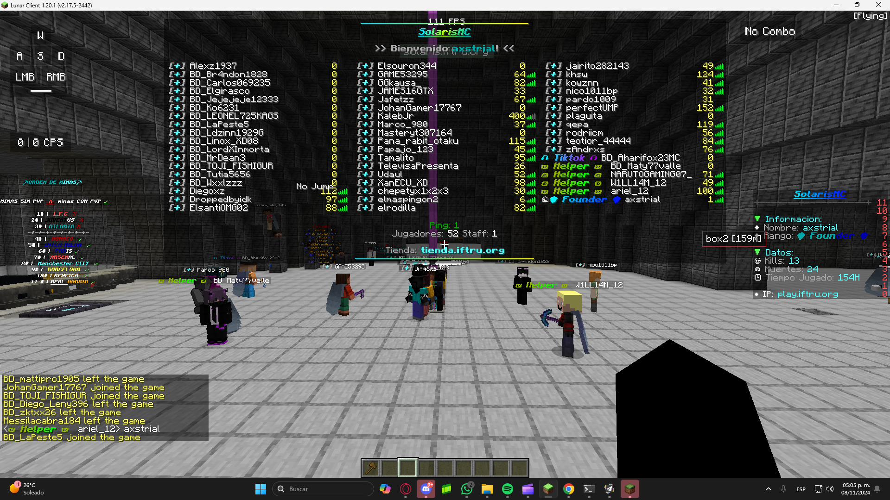
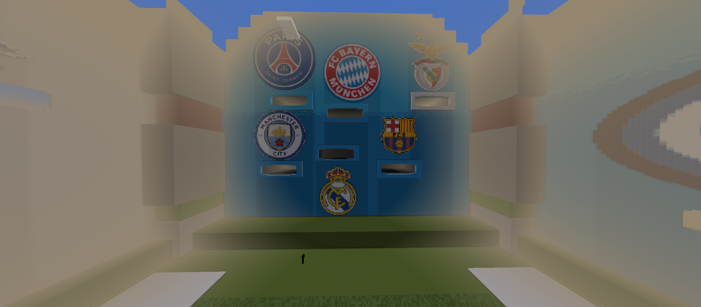
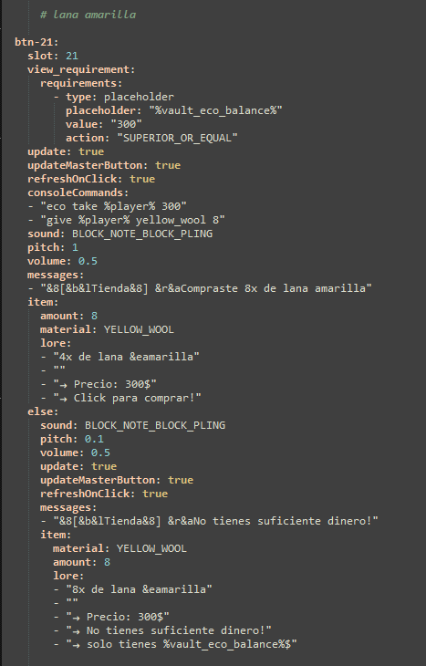
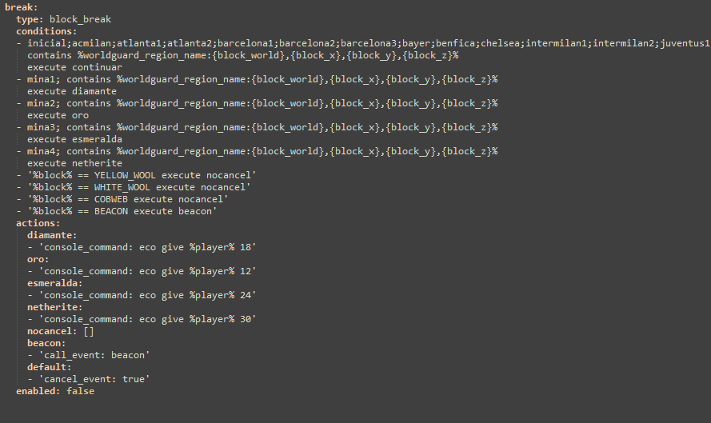

¡Hola! Mi nombre es Alex y tengo experiencia trabajando en una amplia variedad de proyectos, tanto a nivel personal como en servidores. Me especializo en la configuración de plugins para garantizar la mejor experiencia posible para los usuarios. Además, tengo habilidades en la creación de bots de Discord y en la gestión de servidores de Discord. Aunque mi enfoque principal es la configuración de servidores y plugins, siempre estoy dispuesto a colaborar cuando un proyecto lo requiere. Soy un profesional autónomo, pero sé que, a veces, el trabajo en equipo puede llevar los resultados a otro nivel.
Experiencia Profesional
Gestión y Administración de Servidores de Minecraft
Descripción: A lo largo de varios proyectos, he desarrollado una sólida experiencia en la administración y gestión de
servidores de Minecraft, especialmente en el área de BoxPvP. Esto incluye la instalación, configuración y optimización
de plugins, así como la gestión de jugadores y la solución de problemas técnicos.
Habilidades: Configuración de servidores, administración de recursos, optimización de rendimiento, gestión de jugadores,
configuración de plugins.
Logros: He manejado servidores con una media de 35-40 jugadores activos por día, garantizando una experiencia de
juego fluida y estable.
Desarrollo y Configuración de Plugins
Descripción: Me he especializado en la configuración avanzada de plugins, asegurando que los servidores ofrezcan la mejor
experiencia posible a los usuarios. Esto incluye la integración de plugins para economía virtual, gestión de jugadores, entre otros.
Habilidades: Uso de plugins como ZMenu y Vault, creación de sistemas de economía virtual, personalización de plugins para a
justarse a las necesidades del servidor.
Logros: Implementé un sistema de economía que mantuvo el interés y la participación activa de los jugadores a lo largo del tiempo.
Resolución de Problemas Técnicos y Optimización
Descripción: He gestionado servidores con altos niveles de tráfico, lo que me ha permitido mejorar mis habilidades en la resolución
de problemas técnicos y la optimización de recursos. Esto incluye la identificación y resolución de cuellos de botella, así
como la mejora del rendimiento general del servidor.
Habilidades: Optimización de servidores, identificación y solución de problemas técnicos, mejora de infraestructura de hosting.
Logros: Durante el crecimiento de mis servidores, aprendí a lidiar con el aumento de la demanda y mejoré la estabilidad
de los servidores, lo que permitió mantener una base de jugadores constante.
Colaboración en Equipos de Trabajo
Descripción: Aunque suelo trabajar de manera independiente, también he trabajado en equipo con otros administradores
y colaboradores para mejorar la calidad de los servidores. En proyectos recientes, logré reunir a un equipo para trabajar
en el diseño y la implementación de nuevas características.
Habilidades: Trabajo en equipo, gestión de proyectos colaborativos, coordinación de tareas, liderazgo de equipos.
Logros: Gracias al trabajo en equipo, pudimos mejorar significativamente el servidor y la experiencia de los jugadores,
alcanzando una estabilidad duradera.
Creación de Contenido y Promoción
Descripción: Además de la administración técnica de los servidores, he estado involucrado en la creación de contenido
promocional para atraer jugadores y aumentar la comunidad. Esto incluye la creación de videos, redes sociales y
marketing para los servidores.
Habilidades: Creación de contenido, gestión de redes sociales, marketing digital.
Logros: Aumenté la visibilidad de los servidores y logré una comunidad activa que participó de manera constante.
Mi experiencia en servidores de Minecraft es bastante amplia, especialmente en el área de BoxPvP.
He gestionado varios proyectos a lo largo del tiempo, siendo mi último servidor el que alcanzó un
pico de 60 personas y una media de 40 usuarios activos.
NightBox (Mayo 2023)
Mi primer servidor, NightBox, fue lanzado con grandes expectativas, pero no tuvo mucho éxito debido a que el
proveedor de hosting cerró inesperadamente. Aunque no tengo muchas fotos del servidor,
este es uno de los videos que creé:
(Foto del mapa)

SolarisMC (Septiembre 2023)
Mi siguiente proyecto fue SolarisMC, que marcó el inicio de mi carrera en este ámbito. El servidor no tenía un
mapa especialmente atractivo, ya que la construcción no es mi punto fuerte, pero fue una experiencia
increíblemente valiosa.
(Foto del mapa)

Nuevo servidor de BoxPvP (2024)
Después de casi dos años de aprendizaje, decidí lanzar una versión mejorada de SolarisMC, esta vez enfocándome en
mejorar la experiencia de juego. El servidor creció rápidamente, pero el hosting local que utilizaba no pudo soportar la
alta demanda. Fue un reto interesante ver cómo un servidor pequeño podía crecer tanto.
(Foto de la gente jugando)

Mantenimiento y mejoras (Noviembre 2024)
En Noviembre de 2024, realizamos un mantenimiento importante, donde mejoramos el mapa del servidor con la ayuda de un
equipo que formé gracias al apoyo de la comunidad. También implementamos una economía virtual utilizando plugins
como ZMenu y Vault, lo que permitió que el servidor alcanzara una media de 35-40 jugadores activos durante las tardes.
(Foto del nuevo mapa)

Aunque he trabajado en más servidores que no considero relevantes o de los cuales no tengo pruebas visuales,
todos estos proyectos me han permitido aprender muchísimo sobre la configuración de servidores, la administración
de recursos y la optimización del rendimiento para ofrecer una mejor experiencia a los jugadores.
Economía Virtual Personalizada
Uno de los proyectos más complejos que implementé fue una economía virtual completamente personalizada para el servidor,
que no solo dependía de los aldeanos para realizar intercambios, sino que creé menús a mano para ofrecer una experiencia
más fluida y personalizada a los jugadores.
Detalles: En lugar de utilizar los aldeanos para los intercambios, desarrollé menús que permiten a los jugadores realizar
compras y ventas de manera más interactiva. Esto implicó crear un sistema que pudiera manejar todas las posibles acciones y
decisiones de los jugadores de manera eficiente.
Ejemplo de código de uno de los ítems disponibles en el menú:

Sistemas de Minado y Recompensas Personalizadas
Para hacer la economía aún más dinámica, implementé un sistema en el que los jugadores reciben una cantidad personalizada
de dinero al minar bloques específicos en minas designadas. Para esto, utilicé el plugin Conditionals Events, que me permitió
definir reglas personalizadas para cada bloque.
Detalles: Utilicé el plugin para configurar eventos específicos cuando un jugador mina un bloque en particular. La cantidad
de dinero obtenida era variable y dependía del tipo de bloque extraído. Además, traté de compactar el código al máximo para
mejorar el rendimiento y minimizar errores.
Ejemplo de código utilizado para el sistema de minería: (Foto del código de Conditionals Events)

Futuras Implementaciones: Compra de Armaduras Sin Descartar las Existentes
Como parte de mis planes futuros, estoy trabajando en la implementación de un sistema que permita a los jugadores comprar
armaduras sin necesidad de quitarse las que ya están usando. Actualmente me encuentro en una etapa temprana de desarrollo del
código, pero este es un proyecto que podría mejorar significativamente la experiencia de juego.
Detalles: El objetivo es permitir que los jugadores adquieran armaduras adicionales sin perder las que ya tienen equipadas.
Este sistema permitirá que se gestionen mejor los inventarios y dará una mayor libertad a los jugadores.